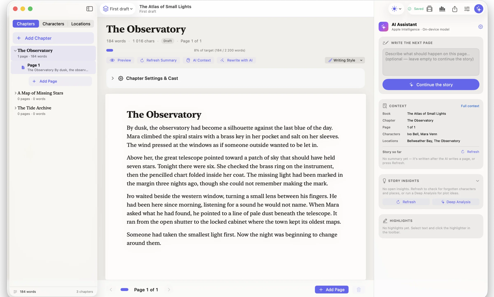
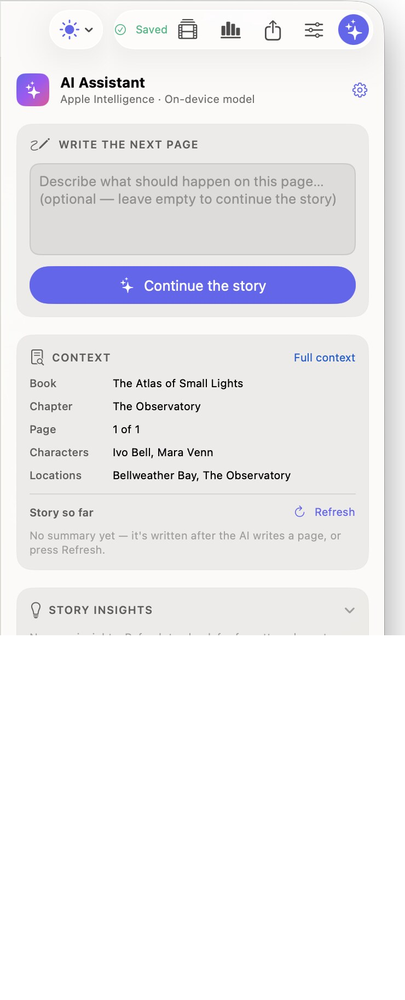
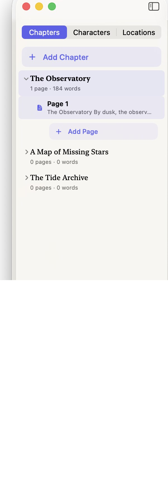
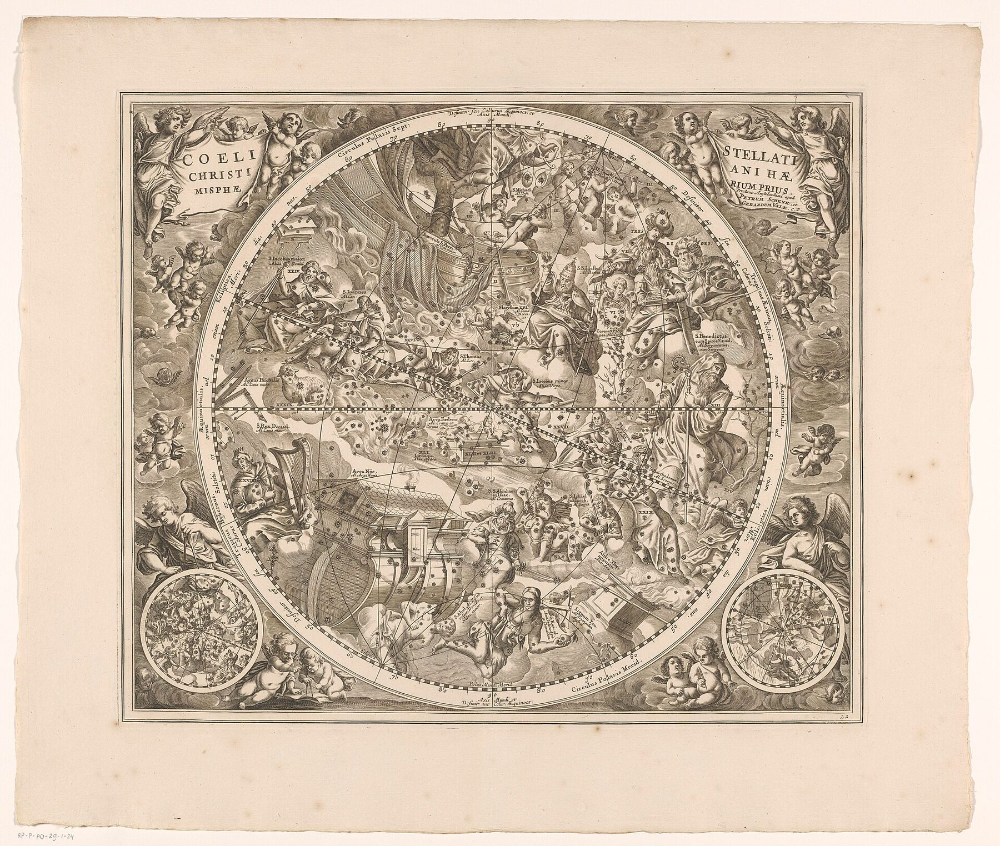
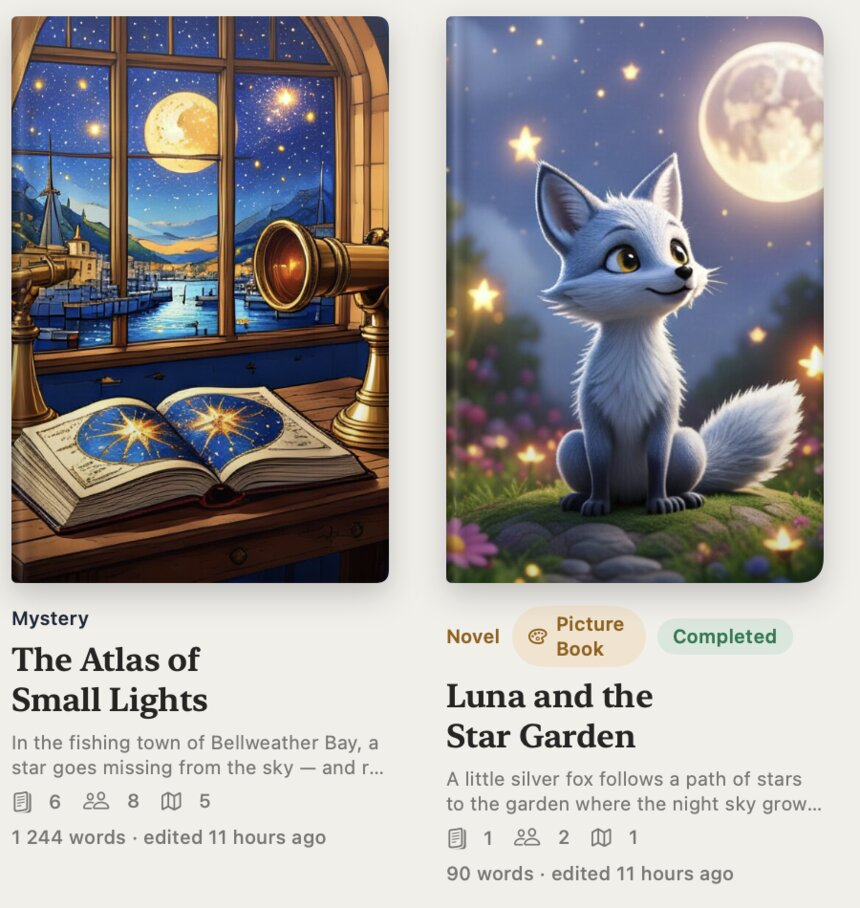
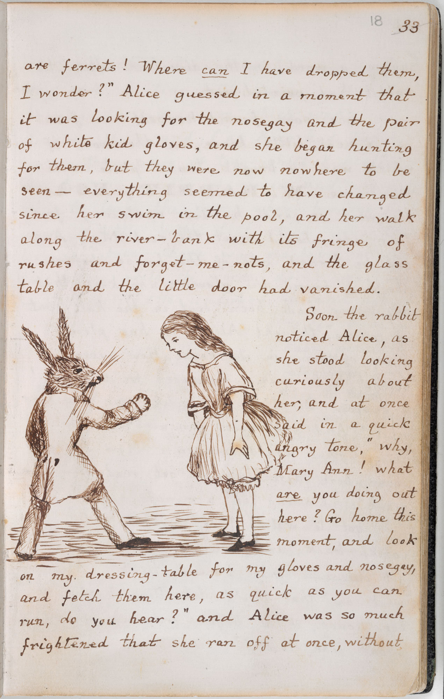

The Observatory
A writing room for your novel.
Novely is a free Mac app for novels and picture books: your manuscript, your cast and places beside it, and an AI that has read the story so far.
Download for Mac
Free. macOS 26 on Apple silicon.
Pages that turn themselves.
A page that looks like a book. When it fills, the next one begins on its own.

Stuck on page two?
Press Continue and the AI writes the next page in your voice. It knows your genre, your characters and places, the chapter so far, and the suggestions you accepted.
Apple Intelligence on your Mac, an open model running locally, Ollama, or your own Claude, OpenAI, Gemini or OpenRouter account. AI is optional, and there are no credits to buy.
Your whole world, close.


Mara Venn assigned but never mentioned in “The Tide Archive”
AcceptDismiss
It notices forgotten threadsUnused characters, unvisited places, unrevealed secrets.


Mara ×3
Ivo ×2
The Observatory ×1
Every name, countedMentions tracked per chapter.
Tonight there were six.
Highlights with notesMark a line, leave yourself a note, or ask AI to rework it.
Words and pictures.
Lewis Carroll wrote Alice by hand and drew her himself. Novely keeps both kinds of book.
Novels get chapters and pages that break on their own. Picture books get an 800 by 600 canvas where text and illustration share the page, with pictures from Image Playground on your Mac.

Lewis Carroll, Alice’s Adventures Under Ground, 1864, British Library, public domain. Film: “Writing with fountain pen”, Wikimedia Commons, CC BY-SA 4.0.
From first line to EPUB.
- draftsCompare any two versions
- picturesPicture-book canvas
- printPDF in trade 5.5 × 8.5 in
- e-booksEPUB 3 for every reader
- episodesChapters into video, priced first
- yoursOne file, on your Mac
Before chapter one.
Yes. Novely has no subscription, credits or writing limits. If you connect a cloud AI provider, that provider bills your own account directly.
An Apple silicon Mac with macOS 26 or later. Apple Intelligence also depends on your device, language and region; local models and cloud AI work without it.
No. Everything about writing works without it. When you want help, choose Apple Intelligence, an open model on your Mac, Ollama, or a cloud provider you connect.
Your library is one file on your Mac. With on-device AI nothing leaves it. If you choose a cloud AI, the prompt and story context for that request go to that provider, under its terms.
Books from the Author Book web app come across in one import: chapters, characters, places, relationships, insights, portraits and episodes.
Download the signed, notarized disk image from GitHub and drag Novely to Applications. After that it keeps itself up to date.
Free. The signed disk image comes from Novely's public releases on GitHub.